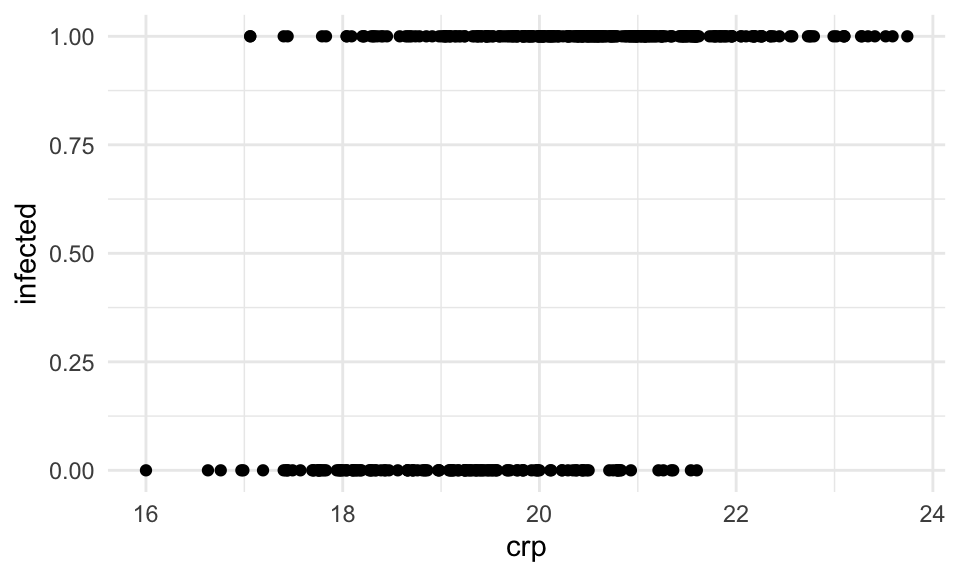
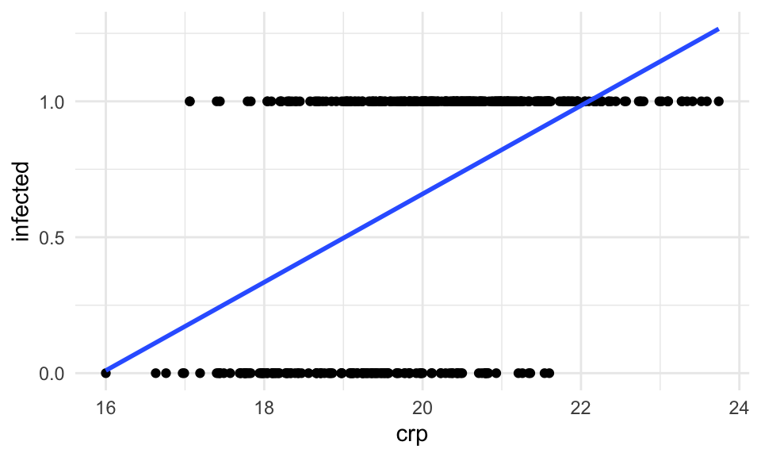
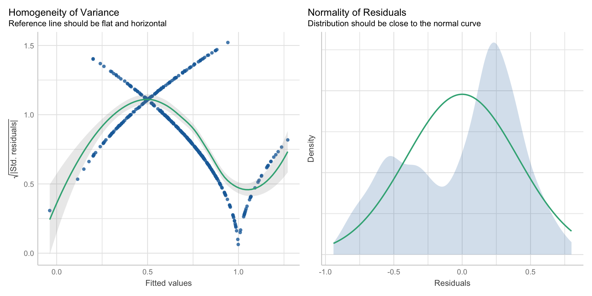

45 Linear Probability Model
Version vom August 28, 2023 um 13:33:11

Das Wahrscheinlichkeitsmodell (eng. probability model oder linear probabiliyt model) ist ein seltsames Konstrukt aus der Ökonomie und den Sozialwissenschaften. Wir nutzen hier auch den englischen Begriff, da der deutsche Begriff eigentlich nicht benutzt wird. Es handelt sich hier also um probability models. Was macht also das probability model? Eigentlich alles falsch, was man so im Allgemeinen meinen würde. Das probability model nimmt als Outcome \(y\) eine \(0/1\) Variable. Wir modellieren also wie bei der logistischen Regression ein Outcome \(y\) was sich nur durch zwei Ausprägungen darstellen lässt. Und damit wären wir dann auch beim Punkt angekommen. Anstatt das \(0/1\) Outcome jetzt richtig mit der logistischen Regression auszuwerten, nutzen wir die klassische Gaussian Regression mit der Annahme eines normalverteilten Outcomes. Wir nutzen hier also das falsche Modell für das gemessene Outcome. Warum machen wir das? Weil sich die Effektschätzer aus einer Gaussian Regression auf einem \(0/1\) Outcome besser interpretieren lassen. Wie immer gibt es viel Disput, ob du so was überhaupt machen darfst. Können tust es auf jeden Fall. Wir können auf alle Daten alle Modelle anwenden. Nun ist es aber so, dass die Auswertung von einem \(0/1\) Outcome mit einem probability model teilweise in der Ökonomie oder den Sozialwissenschaften sehr verbreitet ist. Deshalb findest du auch hier dieses etwas kurzes Kapitel.
Wir immer gibt es auch wieder zwei gute Tutorien auf die sich hier alles reimt. Einmal bitte das Tutorium Linear Probability Model sowie Binary Dependent Variables and the Linear Probability Model besuchen. Wenn du noch mehr über lm() und glm() lesen möchtest, dann kannst du das auch nochmal in der Frage zu Linear probability model: lm() und glm() machen.
45.1 Genutzte R Pakete
Wir wollen folgende R Pakete in diesem Kapitel nutzen.
Am Ende des Kapitels findest du nochmal den gesamten R Code in einem Rutsch zum selber durchführen oder aber kopieren.
45.2 Daten
In diesem Kapitel nutzen wir die infizierten Ferkel als Beispieldatensatz. Wir haben in dem Datensatz über vierhundert Ferkel untersucht und festgehalten, ob die Ferkel infiziert sind (\(1\), ja) oder nicht infiziert (\(0\), nein). Wir haben daneben noch eine ganze Reihe von Risikofaktoren erhoben. Hier sieht man mal wieder wie wirr die Sprache der Statistik ist. Weil wir rausfinden wollen welche Variable das Risiko für die Infektion erhöht, nennen wir diese Variablen Risikofaktoren. Wir nehmen hier jetzt aber nicht alle Variablen mit, sondern nur die Variablen für den Entzündungswert crp, das Geschlecht sex, dem Alter age und der Gebrechlichkeitskategorie frailty.
pig_tbl <- read_excel("data/infected_pigs.xlsx") %>%
select(infected, crp, sex, age, frailty) Schauen wir uns nochmal einen Ausschnitt der Daten in der Tabelle 45.1 an.
| infected | crp | sex | age | frailty |
|---|---|---|---|---|
| 1 | 22.38 | male | 61 | robust |
| 1 | 18.64 | male | 53 | robust |
| 0 | 18.76 | female | 66 | robust |
| 1 | 19.37 | female | 59 | robust |
| … | … | … | … | … |
| 1 | 21.95 | male | 57 | pre-frail |
| 1 | 23.1 | male | 61 | robust |
| 0 | 20.23 | female | 59 | robust |
| 1 | 19.89 | female | 63 | robust |
Im Folgenden wollen wir einmal modellieren, ob es einen Zusammenhang von den Variablen crp, sex, age und frailty auf das \(0/1\)-Outcome infected gibt. Welche der Variablen erniedrigen oder erhöhen also das Risiko einer Ferkelinfektion?
45.3 Theoretischer Hintergrund
Den theoretischen Hintergrund belassen wir hier nur kurz. Die Idee sehen wir dann einmal in der Abbildung 45.1. Wir haben hier dann nur die Variable crp und das Outcome infected dargestellt. Wir sehe die klaren zwei Ebenen. Wir haben ja bei dem Infektionsstatus auch nur zwei mögliche Ausprägungen. Entweder ist unser Ferkel infiziert oder eben nicht. Da wir aber die Entzündungswerte kontinuierlich messen ergeben sich die beiden Ebenen.
ggplot(pig_tbl, aes(x = crp, y = infected)) +
theme_bw() +
geom_point() 
Tja und dann rechnen wir einfach eine Gaussian linear Regression mit der Funktion lm(). Es ergibt sich dann eine gerade Linie, wie wir sie in der Abbildung 45.2 sehen. Da wir aber mi unserem Infektionsstatus auf \(0/1\) begrenzt sind, aber eine Gerade nicht, haben wir das Problem, dass wir in diesem Fall den Infektionsstatus für CRP-Werte größer als 22 überschätzen. Ich meine mit überschätzen dann auch wirklich Werte zu erhalten, die es dann gar nicht geben kann. Es kann keinen Infektionsstatus über ja geben.
ggplot(pig_tbl, aes(x = crp, y = infected)) +
theme_bw() +
geom_point() +
stat_smooth(method = "lm", se = FALSE)
45.4 Modellierung
Dann können wir schon das probability model anpassen. Dazu nehmen wir die Funktion lm(), die wir auch für unsere Gaussian linearen Regression unter der Annahme eines normalverteilten Outocmes \(y\) nutzen. Wichtig ist hier, dass wir auf keinen Fall unseren Infektionsstatus infected als einen Faktor übergeben. Der Infektionsstatus infected muss numerisch sein.
lm_fit <- lm(infected ~ crp + age + sex + frailty, data = pig_tbl)Schauen wir uns aber gleich mal die Modellausgabe an. Wie immer, du kannst alle Zahlen und Spalten in eine Funktion stecken und am Ende kommt dann was raus. Woher soll auch die Funktion wissen, dass es sich um einen Faktor handelt oder eine numerische Variable?
lm_fit %>%
summary
Call:
lm(formula = infected ~ crp + age + sex + frailty, data = pig_tbl)
Residuals:
Min 1Q Median 3Q Max
-0.9413 -0.3454 0.1220 0.3052 0.7996
Coefficients:
Estimate Std. Error t value Pr(>|t|)
(Intercept) -2.648693 0.411294 -6.440 3.38e-10 ***
crp 0.162087 0.014160 11.447 < 2e-16 ***
age 0.001468 0.004522 0.325 0.746
sexmale -0.047673 0.041556 -1.147 0.252
frailtypre-frail 0.038275 0.065363 0.586 0.558
frailtyrobust -0.011544 0.062065 -0.186 0.853
---
Signif. codes: 0 '***' 0.001 '**' 0.01 '*' 0.05 '.' 0.1 ' ' 1
Residual standard error: 0.4103 on 406 degrees of freedom
Multiple R-squared: 0.2499, Adjusted R-squared: 0.2406
F-statistic: 27.05 on 5 and 406 DF, p-value: < 2.2e-16Neben der sehr schlechten Modellgüte, die wir am Bestimmtheitsmaß \(R^2\) mit 0.24 erkennen, sind aber die Residuen nach den deskriptiven Maßzahlen einigermaßen okay. Wir werden aber gleich noch sehen, dass die Maßzahlen hier auch trügen können. Was ist den nun das Tolle am probability model? Wir können die Effektschätzer Estimate direkt als prozentuale Veränderung interpretieren. Das heißt, wir können sagen, dass pro Einheit crp die Wahrscheinlichkeit infiziert zu sein um 16.2087% ansteigt. Das ist natürlich eine sehr schöne Eigenschaft. Nur leider gibt es da meistens dann doch ein Problem. Dafür schauen wir uns einmal die Spannweite der vorhergesagten Werte an.
Wie du siehst, kriegen wir Werte größer als Eins und kleiner als Null aus dem Modell raus. Das macht jetzt aber recht wenig Sinn. Wir können die Werte aus predict() als Wahrscheinlichkeit infiziert zu sein interpretieren. Da unsere Ferkel aber nur gesund oder krank sein können, machen negative Werte der Wahrscheinlichkeit infiziert zu sein keinen Sinn. Auch Werte größer als Eins können wir nur sehr schwer interpretieren.
45.5 Varianzheterogenität
Wenn du das probability model durchführst, dann hast du in den meisten Fällen das Problem der Heteroskedastizität, auch Varianzheterogenität genannt. Oder in anderen Worten, die Residuen als Fehler unseres Modell sind nicht gleichmäßig mit gleich großen Werten verteilt um die Gerade. Gut, dass klingt jetzt etwas sperrig, hier einmal die Abbildung 45.3 um es besser zu verstehen.

Für unser Modell lm_fit von oben können wir auch gleich die Funktion check_heteroscedasticity() aus dem R Paket performance nutzen um zu Überprüfen ob wir Varianzheterogenität vorliegen haben. Aber Achtung, ich wäre hier sehr vorsichtig, wenn die Funktion sagt, dass wir keine Varianzheterogenität vorliegen haben.
check_heteroscedasticity(lm_fit)Warning: Heteroscedasticity (non-constant error variance) detected (p < .001).Neben der Funktion check_heteroscedasticity() gibt es auch die Möglichkeit über check_model() sich die Varianzen und damit die Residuen einmal anzuschauen. Die visuelle Überprüfung ist auf jeden Fall Pflicht. Und wie du in der Abbildung 45.4 siehst, sind die Varianzen weder homogen noch irgendwie normalverteilt. Wir gehen also von Varianzheterogenität aus. Damit liegen wir in Linie mit der Funktion check_heteroscedasticity(), aber das muss nicht immer unbedingt sein. Besonders bei kleiner Fallzahl, kann es vorkommen, dass check_heteroscedasticity() eine Varianzheterogenität übersieht.
check_model(lm_fit, check = c("homogeneity", "normality"))
lm_fit mit der Funktion check_model(). Wir sehen hier eine klare Varianzheterogenität in dem Modell.Jetzt kann man sich fragen, warum sind denn da so Bögen drin? Das kommt von den Abständen der Punkte auf den beiden Ebenen. Die Gerade läuft ja durch einen Bereich in dem keine Beobachtungen sind. Daher ist am Anfang der Abstand zu einer der beiden Ebenen, entweder der Null oder der Eins, minimal und erhöht sich dann langsam. Weil ja nicht alle Beobachtungen alle bei Null sind springen die Abstände von klein zu groß. In Abbildung 45.5 siehst du nochmal den Zusammenhang. Unsere angepasste Gerade steigt ja an, wie du in Abbildung 45.2 siehst. Daher sind die Abstände zu den Null Werten am Anfang sehr klein und stiegen dann an. Sobald die erste Beobachtung mit einem Infektionsstatus von Eins auftaucht, springt der Abstand natürlich sofort nach oben. Werte größer als Eins dürfte es auf der x-Achse gar nicht geben, den dort werden dann Werte größer als Eins geschätzt.
lm_fit %>%
augment() %>%
ggplot(aes(x = .fitted, y = .resid^2, color = as_factor(infected))) +
theme_bw() +
geom_point() +
labs(x = "Angepasste Werte", y = "Residuen", color = "Infected") +
scale_color_okabeito()
.fitted und der Residuen .resid aus dem Modell lm_fit. Die Punkte sind nach dem Infektionsstatus eingefärbt.45.6 Interpretation des Modells
Wir haben ja schon einmal weiter oben in das Modell geschaut und eine Interpretation vorgenommen. Wir erinnern uns, wir können die Effektschätzer Estimate aus einem probability model direkt als prozentuale Veränderung interpretieren. Das heißt, wir können sagen, dass pro Einheit crp die Wahrscheinlichkeit infiziert zu sein um 16.2087% ansteigt. Das ist natürlich eine sehr schöne Eigenschaft. Dann haben wir auch noch gleich die Richtung mit drin, wenn wir also negative Effekte haben, dann senkt die Variable das Risiko pro Einheit um den prozentualen Wert. Bei kategoriellen Variablen haben wir dann den Unterschied zu der nicht vorhandenen Gruppe. Daher sind männliche Ferkel um 5% weniger infiziert als weibliche Ferkel. Leider geht der t-Test, der die \(p\)-Werte produztiert, von homogenen Varianzen aus. Die haben wir aber nicht vorliegen.
Estimate Std. Error t value Pr(>|t|)
(Intercept) -2.6487 0.4113 -6.4399 0.0000
crp 0.1621 0.0142 11.4467 0.0000
age 0.0015 0.0045 0.3246 0.7457
sexmale -0.0477 0.0416 -1.1472 0.2520
frailtypre-frail 0.0383 0.0654 0.5856 0.5585
frailtyrobust -0.0115 0.0621 -0.1860 0.8525Deshalb müssen wir nochmal ran. Wir können die Funktion coeftest() aus dem R Paket lmtest zusammen mit den R Paket sandwich nutzen um unsere Modellanpassung für die Varianzheterogenität zu adjustieren. Wir ändern also die Spalte Strd. Error. Es gibt aber sehr viele Möglichkeiten type die Varianz anzupassen. Das ist ein eigenes Kapitel worum wir uns hier nicht scheren. Wir nehmen mehr oder minder den Standard mit HC1.
lm_fit %>%
coeftest(vcov. = vcovHC, type = "HC1") %>%
round(4) %>%
tidy()# A tibble: 6 × 5
term estimate std.error statistic p.value
<chr> <dbl> <dbl> <dbl> <dbl>
1 (Intercept) -2.65 0.392 -6.75 0
2 crp 0.162 0.0121 13.4 0
3 age 0.0015 0.0045 0.326 0.745
4 sexmale -0.0477 0.0411 -1.16 0.247
5 frailtypre-frail 0.0383 0.0598 0.640 0.522
6 frailtyrobust -0.0115 0.0559 -0.206 0.836Wir schauen also als erstes auf den Standardfehler und sehen, dass unsere Gaussian lineare Regression (OLS) den Standardfehler als zu hoch geschätzt hat. Größer Standardfehler bedeutet kleinere Teststatistik und damit dann auch weniger signifikante \(p\)-Werte. In der Tabelle 45.2 siehst du nochmal die beiden Spalten der Standardfehler nebeneinander. Unser Sandwich-Schätzer (HC1) liefert da die besseren Fehlerterme, die eher der Realität der Varianzheterogenität entsprechen. Wir brauchen die adjustierten Standardfehler aber nur, wenn wir eine statistischen Test rechnen wollen und den \(p\)-Wert für die Bewertung der Signifikanz brauchen.
| OLS | HC1 | |
|---|---|---|
| (Intercept) | 0.4113 | 0.3924 |
| crp | 0.0142 | 0.0121 |
| age | 0.0045 | 0.0045 |
| sexmale | 0.0416 | 0.0411 |
| frailtypre-frail | 0.0654 | 0.0598 |
| frailtyrobust | 0.0621 | 0.0559 |
45.7 Gruppenvergleich
Häufig ist es ja so, dass wir das Modell nur schätzen um dann einen Gruppenvergleich zu rechnen. Das heißt, dass es uns interessiert, ob es einen Unterschied zwischen den Leveln eines Faktors gegeben dem Outcome \(y\) gibt. Wir machen den Gurppenvergleich jetzt einmal an der Gebrechlichkeit frailty einmal durch. Wir habe die drei Gruppen frail, pre-frail und robust vorliegen. Danach schauen wir uns nochmal die prinzipielle Idee des Gruppenvergleichs auf mittleren Wahrscheinlichkeiten infiziert zu sein an.
Eigentlich ist es recht einfach. Wir nehmen wieder unser lineares Modell, was wir oben schon angepasst haben. Wir schicken dann das Modell in die Funktion emmeans() um die Gruppenvergleiche zu rechnen. Jetzt müssen wir nur zwei Dinge noch machen. Zum einen wollen wir alle paarweisen Vergleiche zwischen den drei Leveln von dem Faktor frailty rechnen, deshalb setzen wir method = "pairwise". Dann müssen wir noch dafür sorgen, dass wir nicht homogene Varianzen schätzen. Deshalb setzen wir die Option vcov. = sandwich::vcovHAC. Damit wählen wir aus dem Paket sabdwich den Sandwichschätzer vcovHAC. Wenn du das Paket sandwich schon geladen hast, dann musst due das Peket nicht mit Doppelpunkt vor die Funktion des Sandwich-Schätzers setzen.
em_obj <- lm_fit %>%
emmeans(~ frailty, method = "pairwise", vcov. = sandwich::vcovHAC)
em_obj frailty emmean SE df lower.CL upper.CL
frail 0.668 0.0482 406 0.573 0.763
pre-frail 0.706 0.0355 406 0.636 0.776
robust 0.656 0.0288 406 0.600 0.713
Results are averaged over the levels of: sex
Confidence level used: 0.95 em_obj %>%
contrast(method = "pairwise", adjust = "bonferroni") contrast estimate SE df t.ratio p.value
frail - (pre-frail) -0.0383 0.0597 406 -0.641 1.0000
frail - robust 0.0115 0.0559 406 0.206 1.0000
(pre-frail) - robust 0.0498 0.0458 406 1.088 0.8313
Results are averaged over the levels of: sex
P value adjustment: bonferroni method for 3 tests em_obj %>%
cld(Letters = letters, adjust = "none") frailty emmean SE df lower.CL upper.CL .group
robust 0.656 0.0288 406 0.600 0.713 a
frail 0.668 0.0482 406 0.573 0.763 a
pre-frail 0.706 0.0355 406 0.636 0.776 a
Results are averaged over the levels of: sex
Confidence level used: 0.95
significance level used: alpha = 0.05
NOTE: If two or more means share the same grouping symbol,
then we cannot show them to be different.
But we also did not show them to be the same. n_grp <- 10
toy_tbl <- tibble(trt = gl(3, n_grp, labels = c("ctrl", "roundUp", "killAll")),
infected = c(rbinom(n_grp, 1, 0.8), rbinom(n_grp, 1, 0.5), rbinom(n_grp, 1, 0.3)))
toy_tbl# A tibble: 30 × 2
trt infected
<fct> <int>
1 ctrl 1
2 ctrl 0
3 ctrl 1
4 ctrl 0
5 ctrl 1
6 ctrl 1
7 ctrl 1
8 ctrl 1
9 ctrl 1
10 ctrl 1
# ℹ 20 more rowsfit <- lm(infected ~ trt, data = toy_tbl)
fit
Call:
lm(formula = infected ~ trt, data = toy_tbl)
Coefficients:
(Intercept) trtroundUp trtkillAll
0.8 -0.4 -0.4 check_heteroscedasticity(fit)OK: Error variance appears to be homoscedastic (p = 0.494).coeftest(fit, vcov. = vcovHC, type = "HC1")
t test of coefficients:
Estimate Std. Error t value Pr(>|t|)
(Intercept) 0.80000 0.13333 6.0000 2.116e-06 ***
trtroundUp -0.40000 0.21082 -1.8974 0.06852 .
trtkillAll -0.40000 0.21082 -1.8974 0.06852 .
---
Signif. codes: 0 '***' 0.001 '**' 0.01 '*' 0.05 '.' 0.1 ' ' 1em_obj <- fit %>%
emmeans(~ trt, method = "pairwise", vcov. = sandwich::vcovHAC)em_obj %>%
contrast(method = "pairwise", adjust = "none") contrast estimate SE df t.ratio p.value
ctrl - roundUp 0.4 0.206 27 1.941 0.0627
ctrl - killAll 0.4 0.205 27 1.951 0.0615
roundUp - killAll 0.0 0.242 27 0.000 1.0000em_obj %>%
cld(Letters = letters, adjust = "none") trt emmean SE df lower.CL upper.CL .group
roundUp 0.4 0.172 27 0.0465 0.754 a
killAll 0.4 0.173 27 0.0445 0.756 a
ctrl 0.8 0.110 27 0.5748 1.025 a
Confidence level used: 0.95
significance level used: alpha = 0.05
NOTE: If two or more means share the same grouping symbol,
then we cannot show them to be different.
But we also did not show them to be the same.